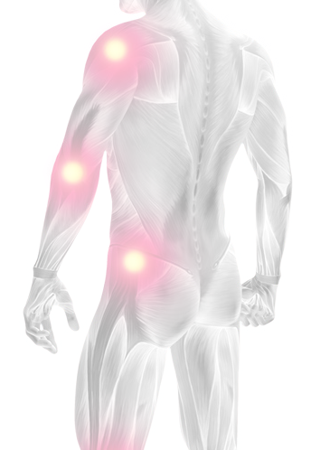

01. Anatomía y Fisiología
B. Sistema articular
Membrana sinovial
La membrana sinovial, o sinovia, es una capa extremadamente fina que reviste internamente a la cápsula articular. Ella produce el líquido sinovial.
Líquido sinovialEl líquido sinovial, producido por la membrana sinovial, es extremadamente espeso, de color amarillo-claro, y contiene nutrientes y oxígeno.
El líquido sinovial actúa como un almohadón amortiguador, y su principal componente es el ácido hialurónico, cuya función básica es nutrir al cartílago articular, proteger y lubrificar las superficies articulares, permitiendo que continúen deslizándose suavemente al recibir una carga extra de peso.
Pueden ocurrir situaciones en que la degradación del cartílago supere el proceso natural de reparación.Tal escenario puede conducir al desarrollo de la osteoartritis.
